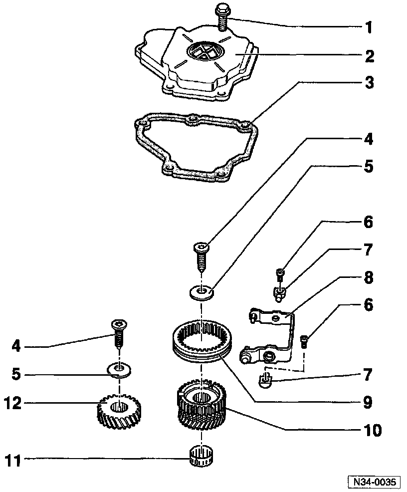

Case Cover, M/T

1 - Hex bolt
^ For transmission housing cover
^ Tightening torque: 10 Nm (7 ft lb)
2 - Transmission housing cover
3 - Gasket
4 - Torx(r) socket-head bolt
^ Tightening torque: 8ONm (59 ft lb)
^ Bolt head design holds Belleville spring (5) in place
5 - Belleville spring

Installation position of Belleville Spring
^ Outer diameter/concave side (arrows) faces 5th gear
6 - Socket-head bolt
^ Tightening torque: 25 Nm (18 ft lb)
^ Pivot pin to trans. housing
7 - Pivot pin
8 - 5th gear shift fork
9 - Operating sleeve, 5th gear
10 - Synchronizer hub
11 - Needle bearing
12 - 5th gear

Installation position of 5th Gear
^Groove around circumference (arrow) faces transmission housing